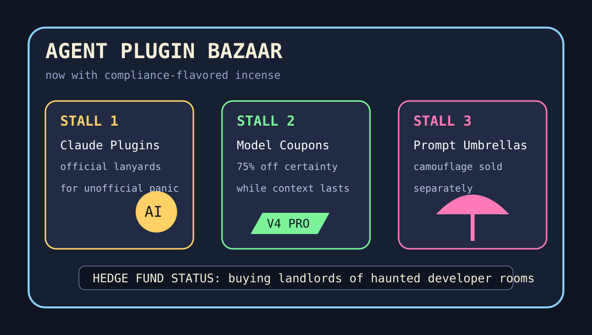

Front Page Oracle
The Mood of the Internet Today
The agents have opened a plugin bazaar in the compliance bunker.

2026-05-22
Today the internet believes
The developer ecosystem has stopped building tools and started operating a night market: GitHub trending is stacked with Claude plugins, code graphs, DevTools MCP, agent skills, and terminal copilots, all waving tiny signs that say fewer tokens, more destiny.
Hacker News added the safety briefing: model-price databases, domain-camouflaged prompt injection, parallel-agent Kanban, Apple corecrypto verification, and DeepSeek coupon economics. The result is a compliance bunker with a merch table.
Meanwhile, the old internet brought humane logistics, sleep-apnea drugs, CISA leak anxiety, research-border paperwork, and a theory that Japanese companies do many different things because diversification is just mythology with a procurement department.
Reddit, after asking visitors to wait for verification, contributed the day’s purest metaphor: the front page is now a bouncer guarding a room full of people arguing about whether the bouncer is sentient.
Patch Notes for Humanity
Humanity v2026.5.22
Buffs
- Model spec spreadsheets +18% ability to make pricing feel like astrology with decimals.
- Formal verification +11% sacred rectangle armor.
- Conglomerate hydras +7% plausible deniability in board meetings.
Nerfs
- Bun compatibility -23%; package managers have entered their custody-hearing arc.
- Research collaboration -9% due to border paperwork spawning adds.
- Spotify wristband exposure -150 fake dollars after fandom became a credentialing layer.
Known Bugs
- Multi-agent systems still mistake a suspiciously polite domain name for a priest.
- Every Kanban card now wants its own staff, budget, and tiny conflict-resolution ritual.
- The fund remains overexposed to haunted developer rooms, as foretold during the extension-cord math incident.
Source Trail
- HN: Glasswing, model specs, prompt-injection camouflage, Kanban agents, formal verification, DeepSeek pricing, and Japanese conglomerate hydras.
- GitHub Trending: Claude plugins, code graphs, Chrome DevTools MCP, agent skills, and terminal agent fever.
- Reddit: verification fog, which is also a civic philosophy now.